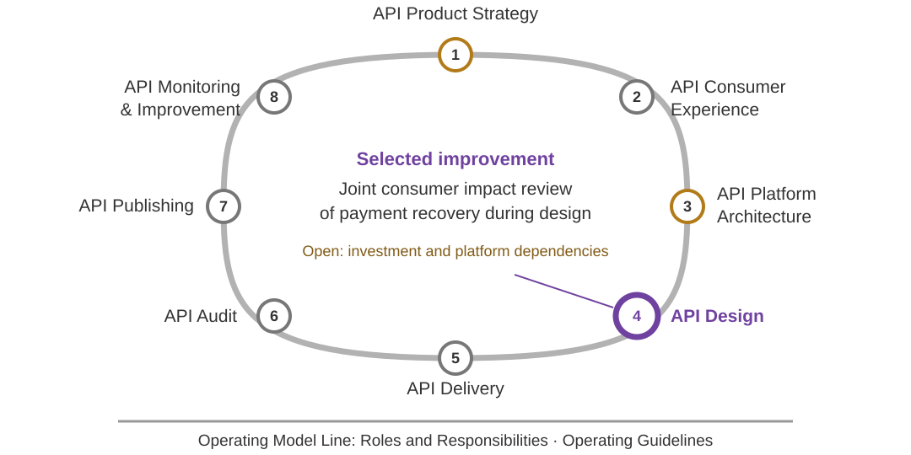

Why do organisations keep encountering the same API quality problems, even when they have standards, assessments and experienced technical teams?
A small-business owner submits a supplier payment through a partner portal. The response is lost. The portal cannot tell whether the payment was accepted, and the owner cannot tell whether the supplier will be paid. Trying again might initiate another payment. Waiting might leave the invoice unpaid.
The API has documentation. Its team has followed technical standards. A previous review even raised a question about retry guidance. Yet the partner developer, payment-platform team and operations staff must now reconstruct what happened. Each has part of the answer; no one has agreed the whole recovery experience.
This fictional Supplier Payments API illustrates a recurring organisational problem. An API is a connection through which one application uses another service’s capabilities. Its quality depends on what consumers need to accomplish and on the people, decisions and systems behind that connection. Correct interfaces and clear documentation matter, but neither alone makes a payment recoverable.
Who this paper is for—and what you will learn
For API leaders, product owners, architects, governance and platform teams whose quality findings keep returning. Learn how to choose useful evidence, uncover the decisions behind recurring problems, and establish a practice that survives the next API change. The payment example shows how Kin’s Score, API Audit and APIOps Cycles can contribute, and how to start with focused work while addressing strategy and architecture dependencies.
The organisational capability perspective. Paper 1, What Your AI Depends On, explores the consumer experience perspective. Each paper stands alone; together they connect consumer needs with the capability to meet them over time.
APIOps Cycles
02 / What does API readiness actually mean?
Ready for whom, and for what?
API readiness is the ability to support an intended use under understood conditions. The consumer’s task gives quality its context.
For the business owner, success means paying the right supplier once and knowing what happened. The API consumer is the partner application carrying out that task. Its developers need to understand submission, uncertainty and recovery; its support team needs a way to resolve an outcome it cannot explain.
A response may confirm receipt of an instruction while the payment remains pending. A successful demonstration may omit a lost response, a delay or simultaneous retries. Readiness must cover those conditions too.
Four questions establish the context
Consumer task: can the application help its user complete the journey, including recovery when something goes wrong?
Business purpose: is the capability valuable enough to maintain, and are its responsibilities and expected benefits understood?
Technical behaviour: do the API contract—the description of requests, responses and expected behaviour—and the running service agree on meaning, access and recovery?
Operations: can teams observe, support and maintain the service and explain an uncertain outcome?
For supplier payments, readiness therefore includes more than an endpoint: the address an application calls to submit an instruction. The partner needs to recognise an existing payment instruction, understand its state and know when recovery requires support. The provider needs evidence that these behaviours hold under the conditions it promises.
State the API, consumers, task and conditions in scope so the evidence answers the questions that matter.
APIOps Cycles
03 / What can assessments tell us?
Use different evidence for different questions
Assessments make aspects of quality visible. Their value depends on understanding what was examined and what the result can support.
A prospective consumer first needs to find and understand the service. Kin’s Score provides one example of assessing publicly observable API readiness: it examines public provider artifacts under a stated rubric. It can prompt questions about discoverability, documentation and access. A public signal should be verified against the API and journey concerned; it does not establish how a particular payment behaves at runtime. [1]
Within APIOps Cycles, API Audit reviews a specified API against applicable business, design and operational criteria before publishing and exposure. It can draw on authorised internal evidence as well as public material, including business-case decisions, contracts, tests and operating guidance. This also applies to internal APIs. The result remains bounded by the scope, criteria and evidence reviewed. [3, 4]
What would help us assess the lost payment response?
The published guide can show what the provider tells partners to do. The contract can show how requests and outcomes are represented. A test that loses the response and repeats the submission can examine what the server actually does. A partner walkthrough can reveal whether the portal explains uncertainty clearly. Operations records and support guidance can show how an unresolved outcome would be investigated.
These sources are complementary. If the guide is unclear, better wording may help. If the server treats every retry as a new instruction, wording alone will not prevent another payment. If the API behaves correctly but the portal starts a new operation, the consumer interaction needs attention too.
Choose evidence for the decision. An internal API may need audit and consumer evidence without a public-provider assessment. Relevant published material may support several reviews. Detailed mappings, assessment boundaries and frozen comparison versions are retained in the optional supporting pack, S3–S5 and S8.
APIOps Cycles
04 / Why do findings fail to become improvements?
The gap between a finding and changed work
Recurring findings often reveal a decision that crosses team boundaries. Closing a ticket inside one team may leave that decision unresolved.
In the payment example, the API team owns submission behaviour. Partner teams own their portals. Operations investigates uncertain outcomes. A business owner decides which capabilities receive investment. Each group can perform its assigned work competently while the overall recovery experience remains incomplete.
A review asks for clearer retry guidance. The documentation owner adds a paragraph, but nobody has authority to agree recovery behaviour across the API, partner applications and operations. The ticket closes. The next partner encounters the same ambiguity and creates another workaround.
Four reasons the problem survives
Fragmented responsibility. Ownership of an endpoint, a guide or a support queue does not necessarily include responsibility for the consumer’s end-to-end task. Someone must coordinate the decisions between them.
Competing priorities. Feature delivery has an immediate sponsor. Shared recovery tests and partner guidance may benefit several future integrations, so each project waits for another to fund them.
Unresolved assumptions. One team uses “submitted” to mean received; another interprets it as paid. Implementing those interpretations consistently inside each component still produces an inconsistent experience.
Missing feedback. Teams record that an issue was fixed, but do not check whether the next integration reused the decision or whether support still handles the same uncertainty.
The answer is not automatically a larger programme. It is an explicit decision about scope, ownership, resources and evidence. Some gaps can be resolved within a small trial; others require business or architecture decisions before the trial can safely proceed.
APIOps Cycles
04 / Continued · Investment and responsibility
Who funds the shared capability?
If every consumer pays to compensate for the same API limitation, individual projects can look efficient while total integration costs grow.
The platform team pays for API upkeep, partners fund local workarounds, and operations pays in investigation time. Who will fund shared test access, onboarding and recovery support? These costs are related even when their budgets are separate.
The API Business Model Canvas helps teams examine those relationships: who consumes the API, what value it provides, which activities and resources sustain it, and how costs and benefits are distributed. Its role here is to make an investment decision visible. [5]
Decision
Shared capability with maintained support
Each integration fills the gaps
Consumers and value
Partners use the same defined payment and recovery model.
Each portal depends on its team’s local recovery knowledge.
Ownership and resources
Named owners maintain test access, guidance and a support route.
Provider and consumer teams fund shared review, tests and upkeep.
Each integration funds its own workaround.
Benefits to validate
Test whether shared support reduces recovery rework and helps reuse.
Check how much repeated investigation and adaptation each partner needs.
The proposed shared model requires commitments from business, platform, partner and operations owners. Decide whether its intended benefits justify the implementation and upkeep.
The full poor and stronger intended business-model canvases are in supporting pack S1–S2. They illustrate a decision; they establish no measured savings.
APIOps Cycles
05 / Connecting the work with APIOps Cycles
Agree recovery across the teams involved
The API team can change submission behaviour, but partners, platform, business and operations owners must agree how payment recovery will work.
APIOps Cycles connects those decisions. Business work establishes the investment; consumer work defines the recovery task. Architecture checks platform and downstream constraints. Design specifies the promise, while delivery, audit and operations establish how it will be implemented, exposed and maintained. [2–4]

One adapted metro map for the Supplier Payments API. Purple marks the selected improvement, not a pass. Amber marks open dependencies; grey stations are not rated. Simplified core route; branches omitted. APIOps Cycles / Osaango Ltd · CC-BY-SA 4.0. [2]
The method calls areas of work stations and related concerns lines. Entry criteria identify dependencies; exit criteria describe what the work must establish. Evidence can come from several stations. Teams reuse what remains valid and revisit what needs attention; each change does not require a complete tour.
Here the selected practice is joint consumer impact review during API design. Partner developers and payment operations examine recovery with the API owner before implementation. Canvases help expose decisions where needed; they are tools for the work, rather than additional approval stages.
Business and architecture owners must resolve dependencies for the test-environment trial and own wider follow-up. Missing strategy or platform evidence can narrow, stop or broaden the work. Selecting one improvement does not make unmet criteria pass.
APIOps Cycles
06 / From finding to improvement · A worked example
Investigate the recovery task together
The Supplier Payments API team uses one uncertain payment to test its assumptions and choose an intervention.
The starting finding is incomplete retry guidance. The API owner brings partner developers and payment operations into a walkthrough: submit an instruction, lose the response, then try to determine what happened. The business owner needs one supplier payment; the partner needs a recovery action it can safely explain.
For this fictional trial, assume the investigation reveals that the portal creates a new submission attempt after a timeout and the server has no agreed replay protection: a way to recognise repeated submissions as the same instruction. Operations must investigate the original outcome. Simply making the retry button clearer could make the problem easier to trigger.
Agree what must be true before writing the solution
The group distinguishes an instruction being accepted from a payment being processed or settled. It agrees that recovery must refer to the original operation, with states that applications and support can interpret consistently. Pending or uncertain processing cannot be presented as a completed payment.
The API owner is accountable for the submission and recovery contract. The partner-guide owner documents the same model and examples. Operations owns the investigation and escalation route. Partner developers check that the portal retains the operation identity and explains its current state.
The team checks platform support, downstream behaviour, access boundaries and the resources needed for testing. Business and architecture owners identify what must be resolved for the trial, what remains open and what would require wider work. If the platform cannot preserve the promised behaviour, the scope must change before proceeding.
This is how the technical and organisational changes connect. The proposed API behaviour addresses today’s recovery risk. The review practice changes how teams find and decide such issues. The next page sets out what the trial would need to implement and verify.
APIOps Cycles
06 / Continued · Intervention and verification
Keep retries tied to one payment instruction
A request identifier supports recovery only when the provider enforces its meaning and consumers know how to use it.
In the proposed design, the caller keeps one reference for the payment instruction, scoped to that partner. The retention period defines how long the server remembers it. Throughout that period, the server links repeated submissions to one operation and prevents a second instruction, even when retries arrive together. It rejects changed payment details. [6]
The contract and guide explain state retrieval, pending and final outcomes, and support escalation. Access checks protect each operation; an identifier must not grant another partner access. [7]
Trial condition
Evidence needed for the decision
Lost response and repeated submission
One instruction, the same operation identity, and a recoverable current state.
Concurrent retries
Server-side enforcement still produces one instruction when requests overlap.
Changed details or expired identifier
Defined rejection and expiry handling; no claim of replay protection beyond the agreed boundary.
Another partner requests the operation
Access is denied; the identifier does not bypass authorisation.
Pending, failed or completed processing
API, portal and support interpret the state consistently and choose an appropriate recovery action.
Submission protection is distinct from downstream processing and settlement. The team must define downstream recovery and what happens after identifier expiry. An identifier, a citation or a passing happy-path test establishes no wider guarantee.
All behaviour and verification here are proposed. No implementation, executed test, completed audit or measured benefit is claimed. Supporting pack S6 contains the fictional completed improvement brief.
APIOps Cycles
07 / How does the improvement become sustainable?
The next change tests the capability
Sustainable quality depends on retaining useful decisions and learning when their assumptions no longer hold.
Suppose the next proposal introduces a new payment method. The team already has a recovery model, partner-review routine, guide examples and replay tests. That is a useful starting point. It is not proof that the new provider processes payments, reports failure or settles funds in the same way.
The API owner reconvenes the relevant partner and operations roles. They check what can be reused and what the new flow changes. A different processing model may require new states, different support arrangements or architecture work. A changed consumer task may require revisiting the journey and business case.
Use proportionate effort at the relevant work
Confirm and reuse: current evidence still meets applicable criteria. Retain its scope and version, and update only what changed.
Learn and establish: the practice or evidence is missing or weak. Agree roles, try the work and improve it through use.
Revisit and broaden: a new API, major change or changed environment invalidates assumptions. Reconsider dependencies and the areas of work affected. [2–4]
These responses can combine. The existing access model might remain valid while settlement behaviour requires a broader review. Entry criteria help expose dependencies; exit criteria help teams decide what the current evidence establishes. Open strategy and architecture gaps retain owners and review triggers. Release readiness remains a separate decision.
Closing the original finding records a change at one moment. Keeping evidence useful, involving the right people and revisiting decisions as circumstances change is the organisational capability that can sustain it.
APIOps Cycles
08 / Where should your organisation start?
Bring one recurring problem into focus
Choose an API task that repeatedly causes uncertainty, support work or consumer workarounds. Follow the evidence to the decisions behind it.
The payment example begins with a lost response and ends with a proposed recovery model and a reusable review practice. APIOps Cycles helps connect those changes across business, consumer, architecture, design and operating concerns. A useful starting point is small enough to examine and broad enough to include the responsibilities that determine the outcome.
Ask five practical questions
Whose task is affected, and what happens when it fails?
What evidence do we have, and what does it leave uncertain?
Which decisions, responsibilities or funding gaps keep the problem recurring?
What focused change can we trial, and which dependencies must be resolved first?
What should the next team be able to reuse, and when must it be reconsidered?
Make the next change easier to get right
Readiness depends on the consumer’s task. Assessment helps reveal gaps; sustainable quality comes from the decisions, responsibilities and repeatable practices that address them. The contribution of APIOps Cycles is to connect that work so the next team can build on what was learned. Whether this improves decisions, reduces repeated work or helps consumers still needs validation.
Authorisation for each requested operation or object.
Optional supporting pack S1–S8: full business-model canvases; selected evidence mappings; the fictional completed improvement brief; scope and methodology notes. Its comparison basis remains APIOps Cycles method-data 4.2.1 and Kin’s Score rubric 0.26.0, rather than a claim about current versions. Reference numbering is local to each document.
Original content and APIOps artwork: Marjukka Niinioja / Osaango Ltd, CC-BY-SA 4.0. Adapted canvas templates additionally credit Alexander Osterwalder. Referenced works retain their own terms. No joint authorship or endorsement by an assessment provider is implied. The Supplier Payments API and proposed improvements are fictional; no executed tests, audit result or measured outcomes are claimed.